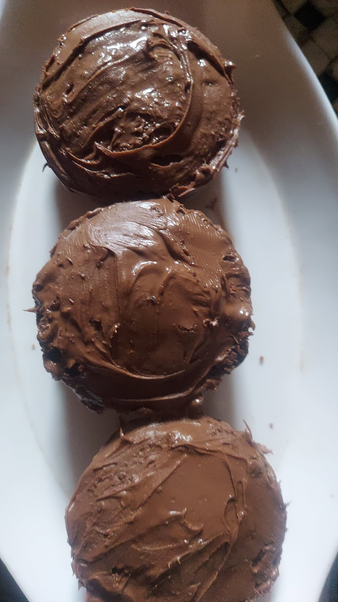

Chocolate Cupcakes Recipe

Description
This classic treat strikes the ultimate balance between deep chocolate richness and sweet, comforting bakery-style perfection. They are ideal for birthdays, celebrations, or a simple weekend baking project that satisfies any sweet tooth.
- Prep Time: 30 mins ⏱️
- Difficulty: Easy 😝
- Flavour Profile: Deep, sweet and chocolaty
Ingredients
- Flour
- Granulated sugar
- Egg
- Cocoa powder
- Vanilla essence
- Milk
- Baking powder
- Chocolate chunks
- Chocolate spread
Step-by-Step Instructions
- Preheat the Oven: Turn your oven on to 350°F (175°C) and line a cupcake tray with paper liners.
- Whisk the Wet Ingredients: In a medium bowl, thoroughly whisk together the 1 egg, sugar, milk, and a splash of vanilla essence until smooth.
- Add the Dry Ingredients: Sift in the cocoa powder and baking powder, stirring gently until just combined into a smooth chocolate batter.
- Fold in Chunks: Gently fold the chocolate chunks into the batter using a spatula so they are evenly distributed.
- Fill the Liners: Scoop the batter into the prepared cupcake liners, filling each about two-thirds of the way full.
- Add the Chocolate Spread Core:Drop a small dollopof chocolate spreaddirectly into the center of each cupcake batter cup.
- Bake: Place in the preheated oven and bake for 15 to 18 minutes , or until a toothpick inserted near the edge comes out clean.
- Coating: Coat the cupcakes with the chocolate spread using a butter knife.
- Cool and Serve: Allow the cupcakes to cool in the pan for 5 minutes, then transfer them to a wire rack to cool completely before enjoying your treat.
Home